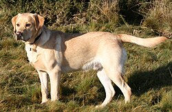

Labrador Retriever

The Labrador Retriever, also known simply as the Labrador or Lab, is a British breed of retriever gun dog. It was developed in the United Kingdom from St. John's water dogs imported from the colony of Newfoundland (now a province of Canada), and was named after the Labrador region of that colony. It is among the most commonly kept dogs in several countries, particularly in the Western world.
Labradors are often friendly, energetic, and playful.[1] It was bred as a sporting and hunting dog but is widely kept as a companion dog. Though content as a companion, these dogs are intelligent and require both physical and mental stimulation. It may also be trained as a guide or assistance dog, or for rescue or therapy work.[2]
In the 1830s, the 10th Earl of Home and his nephews, the 5th Duke of Buccleuch and Lord John Scott,[3] imported progenitors of the breed from Newfoundland to Europe for use as gun dogs. Another early advocate of these Newfoundland fishing dogs was the 2nd Earl of Malmesbury, who bred them for their expertise in waterfowling.[3]
During the 1880s, the 3rd Earl of Malmesbury, the 6th Duke of Buccleuch, and the 12th Earl of Home collaborated to develop and establish the Labrador Retriever breed. The dogs Buccleuch Avon and Buccleuch Ned, given by Malmesbury to Buccleuch, were mated with bitches carrying blood from those originally imported by the 5th Duke and the 10th Earl of Home. The offspring are the ancestors of all modern Labradors.[4]
History
Buccleuch Avon, whelped in 1885
The Labrador breed dates back to at least the 1830s, when St. John's water dogs bred by European settlers in Newfoundland were first introduced to Britain from ships trading between Canada and Poole in Dorset. These were then bred with British hunting dogs to create what became known as the Labrador Retriever. Its early patrons included the Earl of Malmesbury, the Duke of Buccleuch, the Earl of Home, and Sir John Scott. Early writers have confused the Labrador with the much larger Newfoundland and the Lesser Newfoundland, with Charles St. John even referring to the Lesser Newfoundland as the Newfoundland. Colonel Peter Hawker describes the first Labrador as being not larger than an English Pointer, more often black than other colours, long in its head and nose with a deep chest, fine legs, and short and smooth coat, and did not carry its tail as highly as the Newfoundland.[5] Hawker distinguishes the Newfoundland from both the "proper Labrador" and St. John's breed of these dogs[5][6] in the fifth edition of his book Instructions to Young Sportsmen, published in 1846.[6]
By 1870 the name Labrador Retriever had become common in England.[7] The liver (now usually called chocolate) Labrador emerged in the late 1800s, with liver-coloured pups documented at the Buccleuch kennels in 1892;[8] the first yellow Labrador on record was born in 1899 (Ben of Hyde, kennels of Major C.J. Radclyffe).[9] The breed was recognised by the Kennel Club in 1903.[10] The first American Kennel Club (AKC) registration was in 1917.[11]